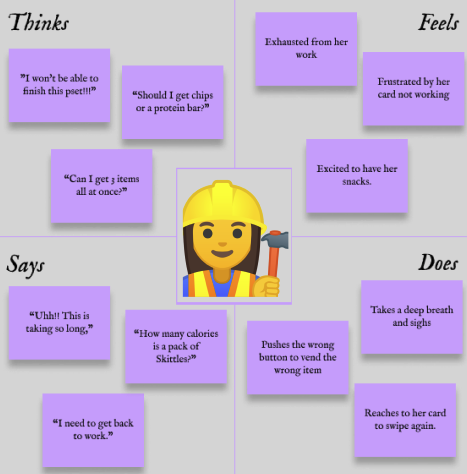
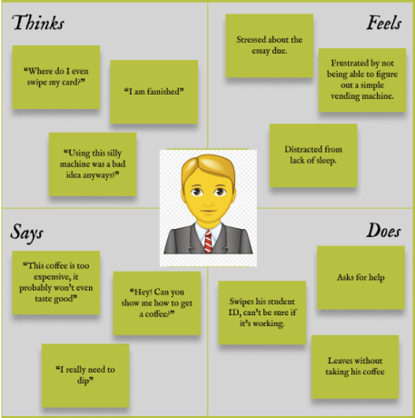

Context
The interface this portfolio concerns is located on a vending machine. The particular one observed is a combination of a few smaller components. The topmost part is a physical compartment to accept cash. Underneath, there is a screen that alternatively displays basic user instructions, \an image that suggests you can swipe a card, and a page where the amount of money deposited and the item selected are listed. At the bottom, there is a credit/student card reader for payments. This interface is utilized to purchase items from the vending machine.
Questions to Observe the User Behavior
1)How often do you use the vending machine?
2)On average, how many items do you vend per visit?
3)How are/were you expecting your experience to be?
4)How was your experience?
5)How do you think this interface can be improved?
The Interface
The interface is the area outlined by the red rectangle. The goods sold are darkened on purpose as our interest is the interface to the right..png)
Recording Observations
Key Observations
In general, users seemed familiar with the interface, indicating that this wasn’t the first time they were interacting with the vending machine. 11/15 of the users tried to make their selection before inserting money and it took users between 10 seconds to 1 minute to figure out they needed to do it the other way around. Some users tried to make more than one selection. Most of the users swiped their cards more than once. Some even tried various cards including their bank and student cards.Questions Answered
1)How often do you use the vending machine?
Answers varied from several times a day to once a week. However, there wasn’t anybody who interacted with this interface for the first time. This makes sense as this vending machine is located in the basement of Barus & Holley in a reserved spot. As a result, students who used the machine knew where to find it previously and 12/15 were engineering students.
2)On average, how many items do you vend per visit?
No doubt we got various answers. More than half (8/15) said they usually get 1+ items, while the rest said they usually get just 1 item. According to our observation though 6/15 of the users got 1+ items, while most of them 9/15 got only one item.
3)How were/are you expecting your experience to be?
Most of the users stated that they would expect a simple interface that would be easy to use and wouldn’t have too many points of interaction. They indicated that the simplicity of the interface would need to match that of the task.
4)How was your experience?
Most of the users didn’t find the interface very intuitive. It didn’t take anyone too long to figure out how to interact but 14/15 people indicated that their experience wasn’t as smooth as they would want it to be, causing them confusion in terms of what steps to follow, and in what order.
5)How do you think this interface can be improved?
The most repeated suggestion was being able to make several selections in a single purchase. Users didn’t enjoy the need to swipe their cards for each item they wanted to get. Secondly, most users thought that the interface was placed lower than it should be and they suggested that the interactive interface should be at eye level.Personas
"A good persona is one that someone can act out with confidence in different scenarios."This is Macaroni Lover
The Macaroni Lover is a hardworking engineering student who likes snacking while she is tackling her heavy workload. She loves working at Barus & Holley and visits the vending machine quite often. She usually gets more than one item and finds it really annoying that she needs to swipe her card more than once to get several items. This is Bagel Lover
The Bagel Lover is an econ major and doesn’t come to B & H often. He prefers to eat healthily and avoids eating packaged food. This is his second time ever using a vending machine and he isn't great with technology. It takes him quite a while to vend the coffee shot he wants. Now he faces the challenge of interacting with this interface with almost zero previous experience. Storyboard
A young Brown student named Alex gets hungry in the middle of his 350 pages of reading. Here is the storyboard of his journey to find some snacks and the ultimate facing with the thelastairVender!Results & Takeaways
This was a fun project to conduct as there were many stages to it, including the pre-preparation, obversing users, asking them questions, and the steps afterwards to bring the website together. It is quite significant for a UX designer to be able to put themselves in the user's shoes and meet their needs.